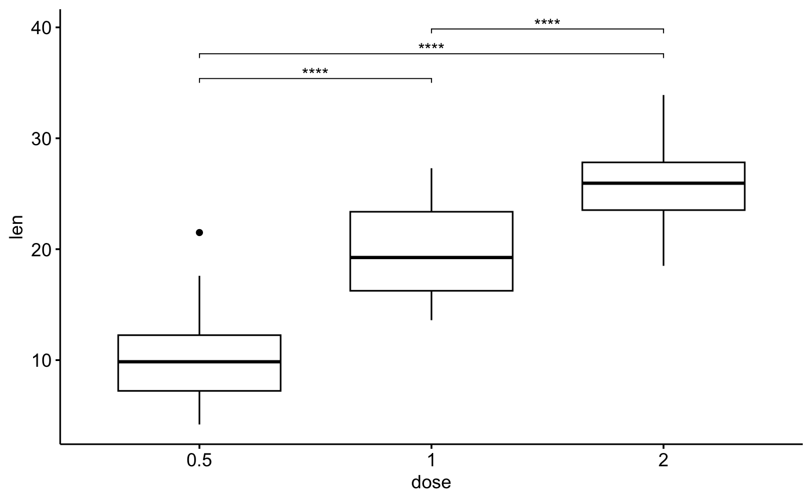

R/get_pvalue_position.R
get_pvalue_position.RdCompute p-value x and y positions for plotting significance levels. Many examples are provided at :
get_y_position( data, formula, fun = "max", ref.group = NULL, comparisons = NULL, step.increase = 0.12, y.trans = NULL, stack = FALSE ) add_y_position( test, fun = "max", step.increase = 0.12, data = NULL, formula = NULL, ref.group = NULL, comparisons = NULL, y.trans = NULL, stack = FALSE ) add_x_position(test, x = NULL, dodge = 0.8) add_xy_position( test, x = NULL, dodge = 0.8, stack = FALSE, fun = "max", step.increase = 0.12, ... )
| data | a data.frame containing the variables in the formula. |
|---|---|
| formula | a formula of the form |
| fun | summary statistics functions used to compute automatically suitable
y positions of p-value labels and brackets. Possible values include:
For example, if
When the main plot is a boxplot, you need the option In some situations the main plot is a line plot or a barplot showing the
|
| ref.group | a character string specifying the reference group. If specified, for a given grouping variable, each of the group levels will be compared to the reference group (i.e. control group). |
| comparisons | A list of length-2 vectors specifying the groups of
interest to be compared. For example to compare groups "A" vs "B" and "B" vs
"C", the argument is as follow: |
| step.increase | numeric vector with the increase in fraction of total height for every additional comparison to minimize overlap. |
| y.trans | a function for transforming y axis scale. Value can be
|
| stack | logical. If TRUE, computes y position for a stacked plot. Useful when dealing with stacked bar plots. |
| test | an object of class |
| x | variable on x axis. |
| dodge | dodge width for grouped ggplot/test. Default is 0.8. Used only
when |
| ... | other arguments to be passed to the function
|
get_y_position: compute the p-value y positions
add_y_position: add p-value y positions to an object of class rstatix_test
add_x_position: compute and add p-value x positions.
add_xy_position: compute and add both x and y positions.
# Data preparation #:::::::::::::::::::::::::::::::::::: df <- ToothGrowth df$dose <- as.factor(df$dose) df$group <- factor(rep(c(1, 2), 30)) head(df)#> len supp dose group #> 1 4.2 VC 0.5 1 #> 2 11.5 VC 0.5 2 #> 3 7.3 VC 0.5 1 #> 4 5.8 VC 0.5 2 #> 5 6.4 VC 0.5 1 #> 6 10.0 VC 0.5 2#> # A tibble: 3 x 10 #> .y. group1 group2 n1 n2 statistic df p p.adj p.adj.signif #> * <chr> <chr> <chr> <int> <int> <dbl> <dbl> <dbl> <dbl> <chr> #> 1 len 0.5 1 20 20 -6.48 38.0 1.27e- 7 2.54e- 7 **** #> 2 len 0.5 2 20 20 -11.8 36.9 4.40e-14 1.32e-13 **** #> 3 len 1 2 20 20 -4.90 37.1 1.91e- 5 1.91e- 5 ****# Add the test into box plots #:::::::::::::::::::::::::::::::::::: stat.test <- stat.test %>% add_y_position() # \donttest{ if(require("ggpubr")){ ggboxplot(df, x = "dose", y = "len") + stat_pvalue_manual(stat.test, label = "p.adj.signif", tip.length = 0.01) }# }